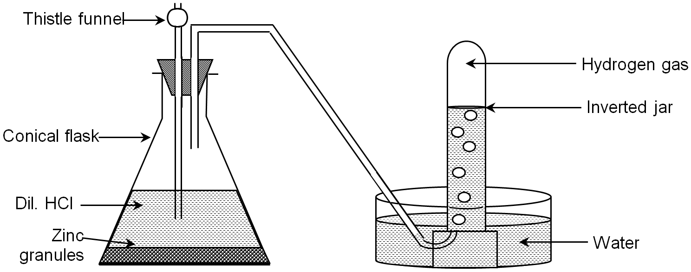

CHEMISTRY FOR SECONDARY SCHOOL STUDENTS
HYDROGEN
Hydrogen is the most abundant element in the Universe, it is found in the sun and most of the stars and the planet Jupiter is composed mostly of hydrogen. It has a standard atomic weight 0f 1.008, atomic number 1 and symbol H. It is the lightest element in the periodic table. It was discovered by Henry Cavendish in 1766 and was named by Antoine Lavoisier in 1783, the name was derived from the Greek words hydro meaning water and genes meaning creator (water maker) due to the fact that hydrogen forms water when burnt in air. It is a colourless, odourless and tasteless gas which is highly inflammable when in contact with oxygen. It belongs to Group 1 and Period 1 on the periodic table. it is a reactive non-metal with an electron configuration of 1s1, it has a single eletron in its shell. Rection of dilute strong acids with metals such as Zinc.
Zn(s) + H2SO4(aq) → ZnSO4 (aq) + H2(g)

Reaction of Amphoteric metals with strong bases like Sodium Hydroxide.
2Al(s) + 6NaOH(aq) + 6H2O(l) → Na3[Al(OH)6]3(aq) + 3H2(g)
Zn(s) + 2NaOH(aq) + 2H2O(l) → Na2[Zn(OH)4](aq) + H2(g)
Action of sodium on cold water.
Sodium liberates hydrogen from cold water. This rection is very vigorous and should carried out with extreme care using only a small piece of sodium.
2Na(s) +2 H2O(aq) → 2NaOH(aq) + H2(g)
Steam reforming natural gas
CH4 (g) + H2O(g) → CO(g) + 3H2(g)
Electrolysis of Water
2H2O → 2H2(g) + O2 (g)
| Physical Properties | |
|---|---|
| Melting Point | 13.99 K(-259.16°C,-434.49°F) |
| Boiling Point | 20.271 K (–252.77°C, -423.182°F) |
| Density | 0.08988 g/cm3 at STP |